An articled clerk from Bloemfontein who served five years and thirty-three days with the medical corps: from a recruit camp near Pretoria to the Western Desert, Tripoli and Syria, and home again by air.
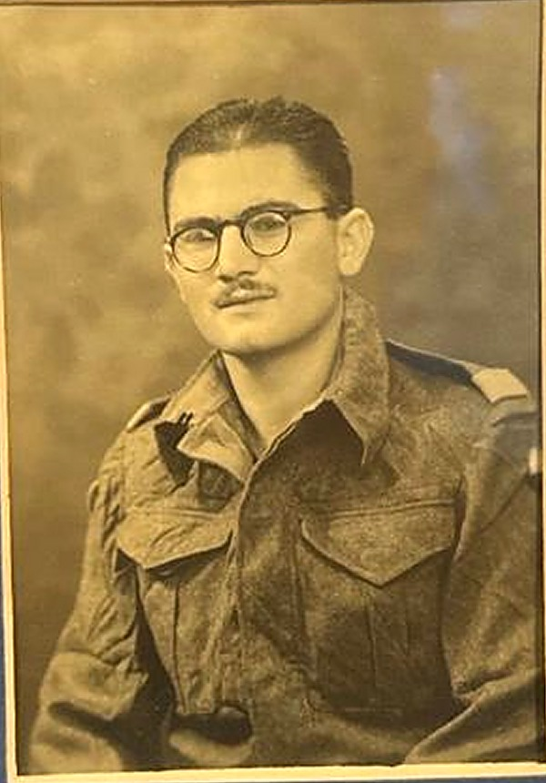
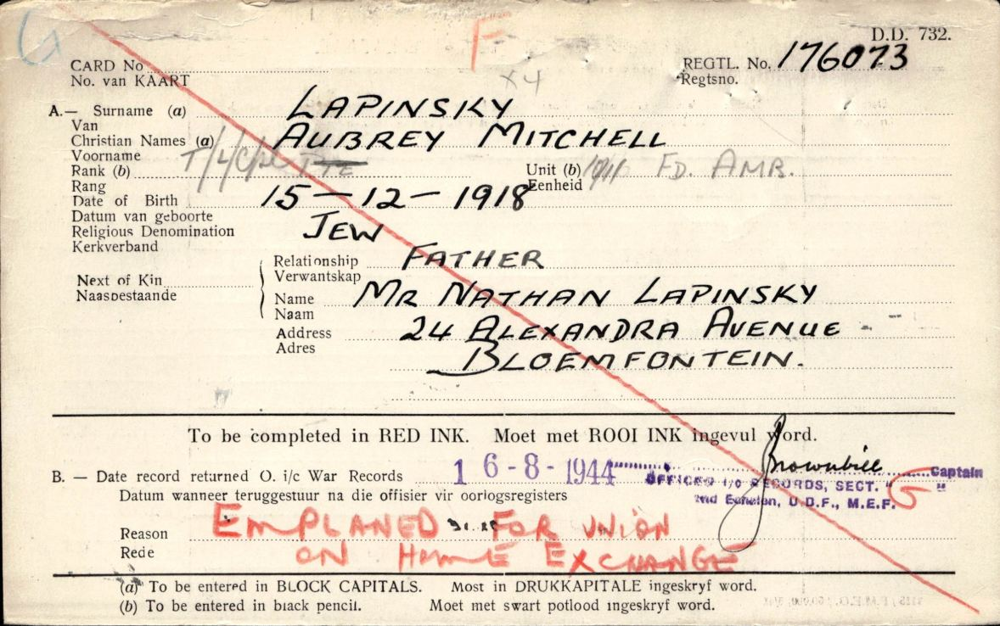
This page is built from his service file, held by the South African National Defence Force Documentation Centre in Pretoria: twenty-seven pages of record cards, conduct sheets, an attestation, discharge papers and medal forms, written in ink, pencil and rubber stamp by clerks in Sonderwater, Cairo and Bloemfontein. Every page is reproduced below with a full transcription.
The file is terse. It says where he was posted and when, but not what he saw. The rest of this page tries to fill that in from the histories of his units, keeping three things apart at each stop: what the record says, what published history says, and what we can only infer. It was put together by his grandson, Gilad Amar, in October 2026.
Scroll through the stops and the globe follows. Each stop quotes the entries from his file for that period, then sets them against what was happening around him. The last stop goes beyond the file.
The wider warEvents touching his unitsHover or tap a marker for the date
On 21 June 1942 the fortress of Tobruk surrendered. Two complete infantry brigades of the 2nd South African Division and most of its supporting units went into captivity: 10,772 South Africans, by the official count. For the families of the division it was the worst day of the war.
His file records that he belonged to the 16th Field Ambulance, the medical unit of that division’s 3rd Brigade. Yet his own medal application places him with No. 8 Casualty Clearing Station in Egypt from 21 June, the very day Tobruk fell, and he was never a prisoner of war. The clearing station appears only there: his service cards go straight from the 16th Field Ambulance to the S.A.M.C. General List.
The explanation is in the order of battle rather than in his file. When the 2nd Division took over Tobruk in March 1942 it did so less its 3rd Brigade, which stayed outside the perimeter and was later transferred to the 1st Division. The 16th Field Ambulance went where its brigade went: the official medical history records it moving with the 3rd Brigade to El Adem on 22 March 1942, and lists it at Sollum, on the Egyptian frontier, on 2 June. How and exactly when he passed from his unit to the clearing station is not written down; the Force Order that struck him off the 16th’s strength was issued on 3 July, twelve days after the surrender, which is the usual lag of paperwork catching up with events.
The unit war diary of 16 Field Ambulance for June 1942, held in Pretoria, would settle it.
The clerks never wrote down why a man was moved, promoted or sent home. Set beside the news of the same week, the entries start to explain themselves.
His file records his illnesses as dates. Two histories written from the medical units’ own diaries say what the desert did to the men in them.
The South African hospitals in Egypt were tented towns pitched on sand, their wards fifty feet apart as a precaution against air raids, with no paths between them; staff trudged from tent to tent while the equipment was still on trains from Suez. Air-raid sirens, dust storms and flies set the rhythm of the work. The summer of 1942, when the army fell back on Alamein, was the season when flies and dust were at their worst in extreme heat, and the medical corps’ hygiene chief wrote afterwards that each draft of reinforcements arrived “unsalted” and went down with what the men called guppy tummy and sandfly fever.
Sandfly fever was a three-day fever with headache and pains all over, widespread, mild, and over quickly; its cause was disputed until the sandfly itself was caught at Mersa Matruh, his unit’s town. Desert sores, the small septic wounds that refused to heal, made up at least half of the minor sick reporting to regimental aid posts. The army’s own medical history adds that the long shorts issued for the desert were “entirely unsuitable”, and that sun helmets went only to one man in ten.
In the three months after the 2nd Division landed, South African troops in the Middle East went sick at the rates in the table, per thousand men. The complaint that put him in hospital in January 1943, dysentery, was the commonest serious one: at No. 101 South African General Hospital in the three months from July 1942 diarrhoea and dysentery led the admissions, far ahead of malaria. September was the height of the malaria season; men were reminded to be “mosquito-minded”. Behind the field ambulances, two convalescent camps at Sollum and Sidi Bengalad held three hundred men each for a week or ten days of rest and feeding rather than evacuate them; his unit was at Sollum in June 1942.
The medical corps fought a second war against dirt. At Mersa Matruh the South Africans worked from the middle of 1941 to December on latrines, water and refuse, and enteritis rose and fell with the standard of the camps; the hygiene officers were scathing about Allied troops who swam in water-supply tanks. Lice meant typhus, so hygiene sections deloused whole formations, prisoners and refugees. In June 1943 the commander of No. 5 Hospital warned that the cold drinks sold by hawkers were made with sewage water, and that the hawkers were re-using NAAFI corks to make the bottles look safe; every cork was to be collected and destroyed.
A patient stayed a soldier. The standing orders of a South African general hospital put lights out from nine at night to six in the morning, with no smoking or talking in between; a man well enough to be up made his own bed, washed his eating irons, shaved before breakfast, came to attention at the foot of his bed for inspection, and did whatever light duties the matron found for him. The canteen and the staff lines were out of bounds. His own eighteen days, from 25 January to 11 February 1943, were probably spent in the British No. 8 General Hospital at Alexandria rather than a South African one; the rules would have been much the same.
The file gives him a week’s local leave in February 1942 and a fortnight in September 1942, with two shillings a day ration allowance, the ordinary leave of a man in the Delta: Alexandria or Cairo, the Springbok Club, the cinemas and cafes. On Christmas Day 1943, by which time he was in Syria, No. 101 Hospital at Qassassin, with plague in the Canal Zone, decorated its tented wards, paraded its bugle band, served a special lunch, and in the afternoon put its football team, the 101 Yellows, against a side from his old unit, the 8th Casualty Clearing Station.
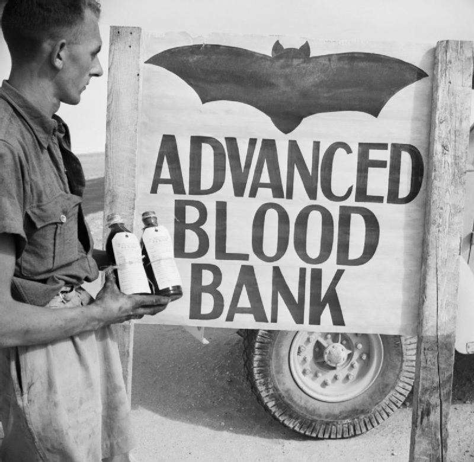
| Septic conditions, including desert sores | 159 |
| Fevers, including sandfly fever and influenza | 150 |
| Ear, nose and throat | 95 |
| Accidental injuries | 73 |
| Dysentery and enteritis | 61 |
| Malaria | 57 |
| Chest conditions | 37 |
| Skin conditions | 29 |
| Venereal disease | 29 |
| Stomach conditions | 29 |
| Eye conditions | 25 |
| Jaundice | 18 |
| Crew, The Army Medical Services: Campaigns, vol. I, table 43. Hospital admissions at No. 101 S.A.G.H., July–September 1942: diarrhoea and dysentery 758, malaria 159 (Horn, 2020, from the hospital’s diary). | |
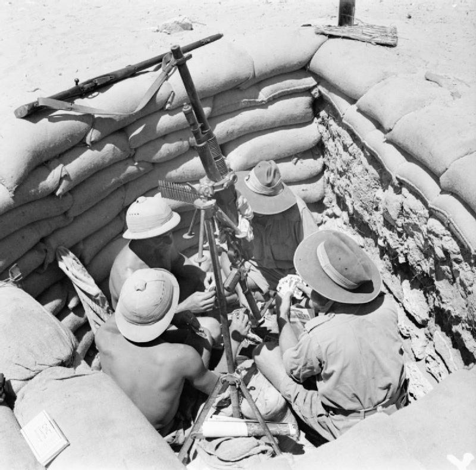
Open any page to see the scan beside its transcription. Printed form text is set in the ordinary face; what the clerks wrote is in typewriter type; stamps are marked. A [?] flags an uncertain reading.
An Active Service Letter Card, the air-mail stationery of the Union forces, addressed to him in Egypt eleven days before he flew home. It was kept with his and Ada’s letters; they married that August.
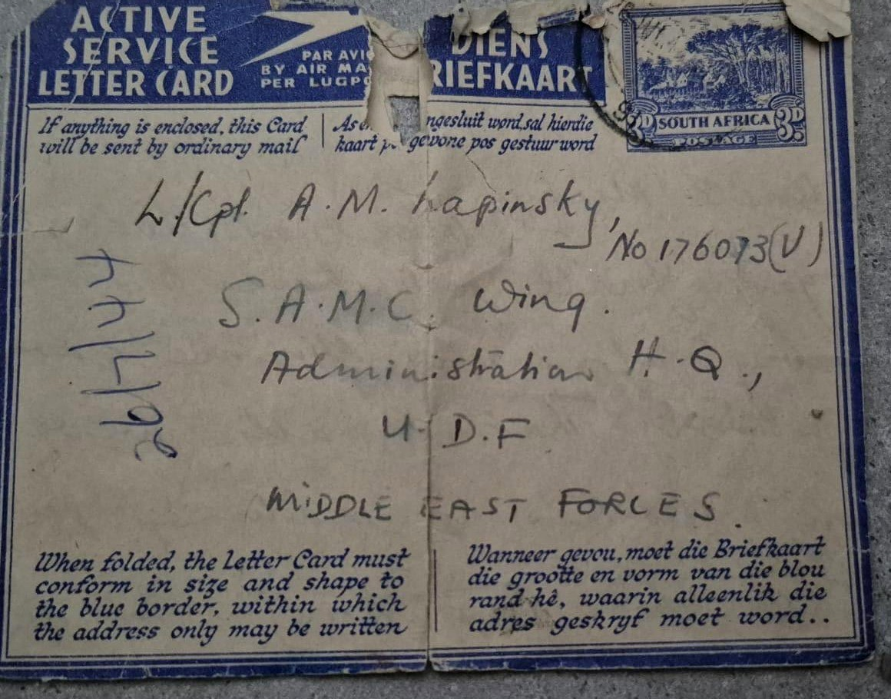
The address is a small piece of evidence in itself. On 9 July 1944 his file moved him from the 10/11 Field Ambulance to the S.A.M.C. General List; “S.A.M.C. Wing, Administration H.Q.” was where the mail of a medical-corps man without a unit was sent. The “(V)” after his number is the volunteer suffix that appears in red on his record cards. By the time the card reached Egypt he may already have been in the air.
The card is torn at the top and a corner of the stamp panel is gone: it has been handled, folded and kept for eighty years.
The ribbons came first: the Africa Star’s and the Africa Service Medal’s while he was still serving, the 1939–45 Star’s and Defence Medal’s by post in January 1946. The medals themselves were engraved at the S.A. Mint and despatched on 1 March 1957 with the slip shown below. One never reached him: the Africa Star, with its 8th Army clasp, went missing in the post.
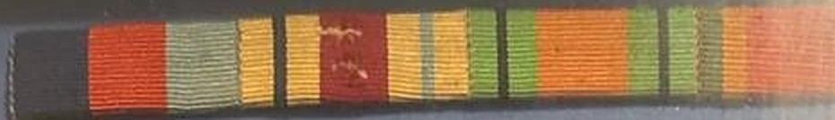
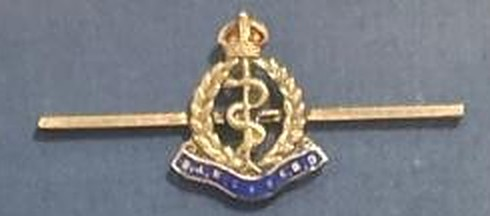
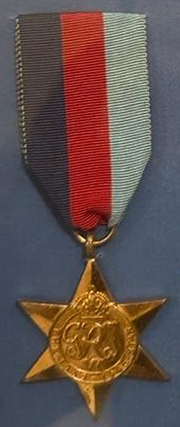
For operational service. The slip describes the ribbon as “dark blue, red and light blue in three equal vertical stripes”, for the Navy, Army and Air Force.
Ribbon despatched 21/1/46
For service in North Africa between June 1940 and May 1943; the clasp for service under Eighth Army from 23 October 1942. The transmittal slip ticks it and its clasp, but the medal was lost in the post and is not in the frame. Its ribbon is drawn here from the slip’s description.
Ribbon issued by 10/11 Fld Amb
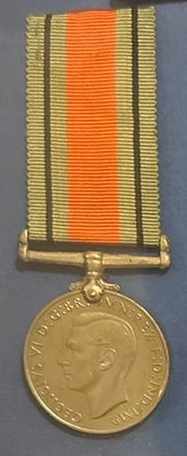
The British award for non-operational service, which for him covered the year at 140 Military Hospital, Tempe. “Flame coloured with green edges, upon each of which is a narrow black stripe.”
Ribbon despatched 21/1/46
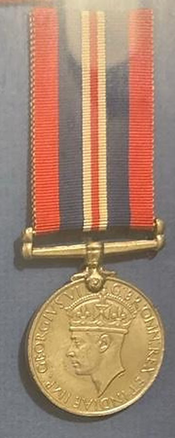
For twenty-eight days or more of full-time service anywhere during the war. The obverse carries the crowned head of King George VI.
Listed on the discharge card
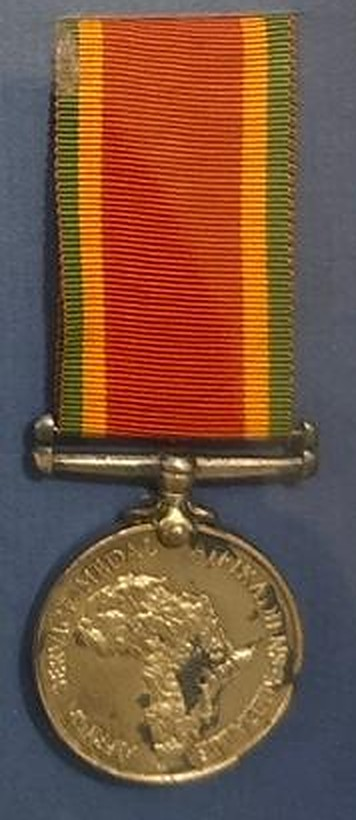
South Africa’s own medal for volunteers who took the oath to serve outside the Union. Orange, “with green and gold of the Springbok Colours” at the edges; the reverse shows the map of Africa. The red “V” after his number and the stamp ANYWHERE on his cards record the oath.
Awarded by UO 34/44/1572
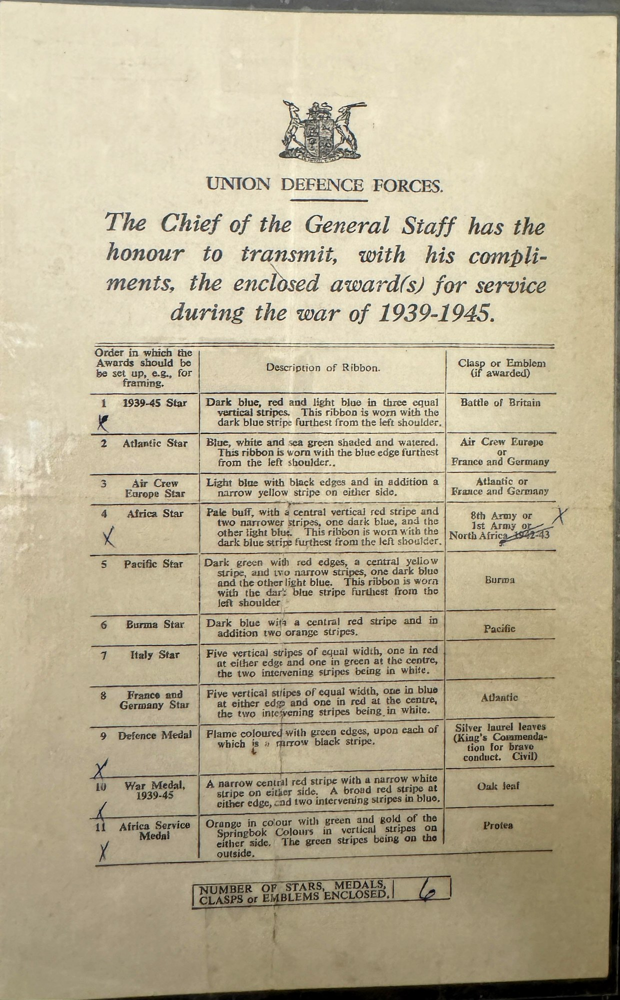
“The Chief of the General Staff has the honour to transmit, with his compliments, the enclosed award(s) for service during the war of 1939-1945.”
The Union Defence Forces sent every parcel of medals with this printed slip. It lists the eleven stars and medals of the war in the order they should be mounted, describes each ribbon, and names the clasps. A clerk has ticked his five, marked the 8th Army clasp against the Africa Star and struck out the alternatives, and written 6 against the number of items enclosed: five medals and one clasp.
The frame follows the slip’s order, with the Defence Medal and War Medal above, the 1939–45 Star and Africa Service Medal below, and a space where the Africa Star should hang. The plaque reads “World War 2, 1939–1944”; his file carries his service to his discharge on 24 August 1945.
A service record is a ledger of postings, not a diary. These are the gaps that remain.
His commanding officer wrote “clerical and medical duties”. The file never names his trade within the unit: nursing orderly, stretcher-bearer and orderly-room clerk were all medical-corps jobs, and over five years he may have done more than one. The unit war diaries may say.
With the 16th at Sollum, on the Egyptian frontier, or on the road back: the unit was at Sollum on 2 June and the brigade withdrew to Alamein on 21 June. Only the unit’s war diary would place him on the day.
Probably “Volunteer”, but no source confirms it. The double number itself is now explained: the official medical history records that the remains of the 10th and 11th Field Ambulances were amalgamated in June 1942, after the 11th was overrun at Sidi Rezegh.
He was there with dysentery from 25 January to 11 February 1943. One form reads “Tonsilitis” for the same stay. No South African hospital carried that number, so it was most likely the British No. 8 General Hospital at Alexandria; this is not confirmed.
Seven months under Ninth Army, December 1943 to July 1944. The South African presence there is thinly documented; the unit’s war diary is the only likely source.
“Home Exchange” appears to be a scheme that swapped long-serving men for fresh drafts. The likely route was Cairo, Khartoum, Kisumu, Pretoria, by SAAF transport, over about three days. This is inferred, not recorded.
Every abbreviation that appears in the file. Entries marked † are confirmed from Jim Findlay’s South African Military Abbreviations; the rest are standard Union Defence Force usage of the period.
Three kinds of statement appear on this page, and they are not equally certain. The labels under each stop say which is which.
Twenty-seven pages from the Department of Defence archives in Pretoria: his attestation, record cards kept in Cairo and Pretoria, conduct sheets, discharge papers and medal forms. Every page is reproduced above and was transcribed word for word, including the clerks’ mistakes. Where a reading is uncertain it is marked [?]. Where two forms disagree, both readings are given.
These entries are the only facts about him in this story. Everything else is context.
The movements of his units come from the British official medical history, F.A.E. Crew’s The Army Medical Services: Campaigns (1956–57), which names the South African field ambulances at Mersa Matruh in 1941, explains the 10/11 amalgamation, and places his unit at Abd el Qadir in 1942. T.D.M. Stout’s New Zealand Medical Services in Middle East and Italy (1956), the New Zealand official medical history, records the South African medical units leaving Matruh on 23 June 1942. The convoy he sailed in is in the Admiralty’s war diary for the South Africa station. The battles, dates and figures are from the Union War Histories and the standard accounts.
These say where his unit was. They do not say where he was within it. The dates in the last stop come from a fourth source, the burial registers indexed by the University of Cape Town, and are marked as public records.
Why he was in Egypt when Tobruk fell, what he did on the wards, and the route of the flight home: these are readings of the evidence, not statements in it. They are written as such, and they could be overturned by a single page of a unit war diary.
The war diaries of his four units exist in Pretoria and have not yet been read.
The diaries of 16 Field Ambulance, 8 Casualty Clearing Station, 10/11 Field Ambulance and 140 Military Hospital are held by the Department of Defence Documentation Centre (SANDF Archives), Pretoria. There is no online index; requests are made in writing, with his number and the unit names.